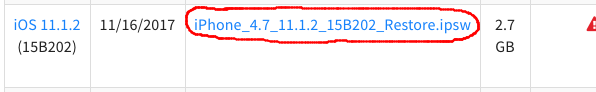
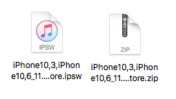

Decrypting IPSWs
Author: MPG13
IPSW decryption can be used to restore system files
An IPSW file is the operating system image for iOS devices. You use these to restore within iTunes or through third party tools like FutureRestore. Think of them like an iOS equivalent to a Windows ISO.
Within IPSW files are the system file structure. This is incredibly helpful in the case of accidentally deleting a system file or folder.
If you have deleted a system file or folder, do not reboot or respring! This could cost you your jailbreak! If deleted via Filza or iFile, first attempt to locate it within the trash and restore it!
Requirements
- A computer running MacOS
Instructions
Method One: iPhone Casing
- Remove your case, if you have one, from your phone
- On the back casing of your phone, look for the device information text
- In the bottom left, find the string of text following "Model" or "Model No." This should look along the lines of
A1549
Method Two: System Info
- Download the tweak "System Info" by author "ARX8x" from the BigBoss repo in Cydia
- Once installed, launch Setting, and navigate to
Settings>General>Aboutand find the Model cell. This should look along the lines ofA1549 - Tap on the cell once to get your device's Model number, and hold on the cell to copy your Model
Other methods are available but will not be covered here, to keep things brief.
- Go to IPSW.me's Device Finder
- Press the button corresponding to your device (iPhone, iPod Touch, iPad)
- In the text box that shows up toward the bottom of the device, enter your Model Number and press Enter
- In the new panel that shows up, select "Browse all iOS releases"
- From this page, find the IPSW for the desired iOS version, and click on the link in the download column 
- Save the file to a folder you'll remember
- Create a duplicate of the IPSW file you just downloaded (
CMD+D) - Change the copied file's extension from
.ipswto.zip

- Open the ZIP file to extract its contents